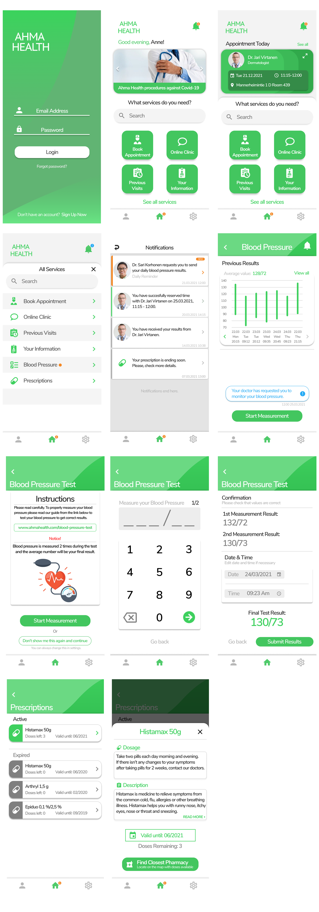

Ahma Health (Reaktor Assignment 2022: UX Design)
This is an assignment for Reaktor UX Designer role for Summer 2022. Task was to streamline digital healtcare user experience in this imaginary company's healthcare mobile application.
For more information about the assignment can be found in the following site: http://www.reaktor.com/assignment-2022-ux-design
I chose to do Case C: Monitoring and Case D: Prescriptions. In summary, Case C: Monitoring idea was to create a use case to report blood pressure for your doctor and Case D: Prescriptions was to check if user's prescription is valid and locate nearest pharmacy if there are doses available. I used Figma to create the user interface.
